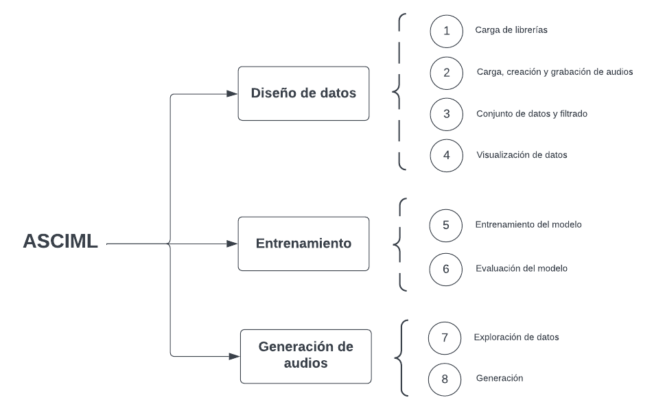

ASCIML UN PROTOTIPO DE APRENDIZAJE AUTOMÁTICO INTERACTIVO PARA LA SÍNTESIS DE SEÑALES
Universidad Nacional Autónoma de México (UNAM)
Tecnología Musical
Gerardo Meza
Este trabajo de maestría aborda el creciente auge del aprendizaje automático en diversos campos del conocimiento, reconociendo que su diseño, entrenamiento, sesgo y implementación siguen siendo accesibles solo para una minoría. En el ámbito de la música, esto se refleja en herramientas de inteligencia artificial que se limitan a resolver un conjunto reducido de problemas creativos y de composición. Aunque compositores y creadores entusiastas pueden acceder a algunas de estas herramientas y personalizarlas, se enfrentan a obstáculos como la terminología, los algoritmos y modelos, las métricas de evaluación, la programación y los lenguajes de programación. Desde 2007, han surgido proyectos de investigación que buscan reducir esta brecha de aprendizaje entre los usuarios y los modelos de aprendizaje automático de manera interactiva. En este contexto, la presente investigación se enfoca en vincular el aprendizaje automático interactivo con un modelo generativo para la síntesis y generación de materiales sonoros, dando lugar al desarrollo del prototipo ASCIML (Assistant for Sound Creation with Interactive Machine Learning). El aporte de esta investigación radica en la creación de una herramienta que permite a los usuarios dirigir el entrenamiento de algoritmos generativos con conjuntos de datos personalizados, evaluar el proceso y generar nuevas fuentes sonoras mediante la interpolación entre sonidos. Esta investigación plantea preguntas centrales sobre la posibilidad de generar modelos que ofrezcan resultados sonoros interesantes desde una perspectiva creativa de manera rápida, así como estrategias para agilizar el proceso de aprendizaje automático interactivo. Además, se busca encontrar estrategias que faciliten la generación sencilla de conjuntos de datos, especialmente en la generación de señales. Por último, se explora el aspecto generativo del sistema y cómo los músicos buscan crear nuevos sonidos. Para evaluar estas ideas, se llevó a cabo una revisión exhaustiva del estado del arte del aprendizaje automático interactivo y su aplicación en el ámbito musical, así como de los modelos generativos aplicados a la generación de señales. Además, se desarrolló un prototipo en Google Colab que integra los hallazgos de la revisión del estado del arte. Este prototipo combina diversas tecnologías, como algoritmos para el diseño de conjuntos de datos personalizados, un autocodificador de variación y funciones para la generación de materiales sonoros a partir de la representación latente de los modelos, así como funciones de interacción con el usuario, como una interfaz gráfica, visualizaciones y elementos audiovisuales. Finalmente, se llevaron a cabo tres laboratorios acompañados de una encuesta y se interpretaron los datos obtenidos de dichos ejercicios.
El prototipo
Laboratorios
Este estudio consistió en tres laboratorios con músicos de la Universidad Nacional Autónoma de México (UNAM) para evaluar ASCIML como herramienta de síntesis sonora y recopilar información para futuras versiones. Se diseñó una encuesta para evaluar las etapas de ASCIML y la eficiencia de las herramientas implementadas. Los participantes generaron conjuntos de datos, entrenaron modelos y generaron nuevos sonidos. Además, se realizó una dinámica posterior para comprender el funcionamiento de ASCIML en un entorno más cercano a su uso real. Los laboratorios involucraron a estudiantes de diferentes semestres de la carrera de Música y Tecnología Artística y la Licenciatura en Música de la UNAM. Los resultados y sugerencias de los participantes fueron recopilados a través de encuestas y se presentan en el estudio para obtener una visión más clara de los hallazgos obtenidos.


Miniaturas
MINIATURA #1 por Andrés Limón Benítez
MINIATURA #2 por Kevin Requena
MINIATURA #3 por Martín Alonso
MINIATURA #4 por Carlos Flores
IML y experiencia de usuario
Durante la investigación, se encontró que tanto los modelos nuevos como los pre-entrenados son útiles para exploraciones sonoras diversas. Los resultados indicaron que la elección entre un modelo nuevo y uno pre-entrenado depende de la facilidad de aprendizaje de los materiales y su presencia en el modelo pre-entrenado. Basándose en estos hallazgos y en reflexiones anteriores, se considera importante seguir desarrollando el prototipo incluyendo ambos modelos para permitir a los músicos realizar una amplia gama de exploraciones musicales. Además, se encontró la necesidad de contar con un módulo de evaluación que incluya elementos audiovisuales claros y comprensibles para los usuarios. Las herramientas de visualización de datos también se beneficiarían al incorporar estos elementos. Se observó que la mayoría de los usuarios encontraron fácil utilizar el prototipo, aunque algunos tuvieron dificultades con la operación secuencial del cuaderno y la generación de nuevos materiales. Esto sugiere la necesidad de un diseño de experiencia de usuario más detallado y una mayor familiaridad con el paradigma de aprendizaje automático por parte de los usuarios. A pesar de esto, todos los participantes lograron guiar el proceso de aprendizaje de ambos modelos y aplicar creativamente los elementos creados con ASCIML durante los laboratorios y las miniaturas.
Intersección entre lo creativo y ASCIML
En los laboratorios con ASCIML, se encontró que los usuarios consideraron tanto la carga de archivos como la síntesis y la grabación como eficientes, aunque hubo una predilección más consistente por la síntesis y la grabación. Esto sugiere que la practicidad es un factor importante para usuarios menos experimentados en tecnología musical, pero también se reconoce la importancia del diseño de los materiales de audio para la creación musical. Se destaca la importancia de seleccionar y diseñar cuidadosamente los materiales de audio, ya que esto está estrechamente relacionado con el proceso de composición. Además, se sugiere explorar más a fondo la relación entre el control y la creatividad en compositores más experimentados y examinar cómo el manejo de big data puede influir en los procesos y resultados musicales. En cuanto a la generación de nuevos materiales con ASCIML, se observó que los compositores lo utilizan para crear variaciones de materiales seleccionados, lo que respalda la idea de que los conjuntos de datos pueden ser potenciales para una obra musical. En general, los resultados de la parte experimental indican que ASCIML puede adaptarse a diferentes propuestas estéticas y estrategias de composición. A pesar de las restricciones del modelo, los músicos son capaces de utilizar los resultados de manera creativa. En el próximo apartado se presentarán las conclusiones y las perspectivas futuras del proyecto.
Conclusiones
La investigación comenzó en 2021 con el desarrollo de ASCIML, una herramienta interactiva que permite a los compositores y creadores sonoros realizar síntesis con redes neuronales sin necesidad de programar. Se utilizó Python y Google Colab para crear un prototipo que combina el aprendizaje interactivo automático con modelos generativos de inteligencia artificial. Se llevaron a cabo tres laboratorios con músicos jóvenes de la comunidad UNAM para explorar el potencial de ASCIML. Los participantes diseñaron conjuntos de datos, dirigieron el proceso de aprendizaje de los modelos y generaron nuevos audios. Se recopiló información a través de encuestas para evaluar la eficacia y utilidad de las tecnologías implementadas, la interacción entre el pensamiento compositivo y ASCIML, y la inversión de tiempo en el proceso. Los resultados muestran que ASCIML y herramientas similares requieren una curva de aprendizaje independiente del conocimiento de programación. Se sugiere incluir modelos sin entrenamiento y pre-entrenados en futuras versiones para satisfacer diferentes necesidades compositivas. También se destaca la importancia de proporcionar retroalimentación audiovisual inspirada en herramientas conocidas, como los plug-ins en los DAW. A pesar de los avances logrados, aún hay desafíos pendientes, como mejorar la calidad de la reconstrucción del modelo y la experiencia del usuario. Se debe trabajar en arquitecturas más avanzadas, el diseño de la interfaz de usuario, la documentación y el soporte al usuario. Además, se necesita establecer puentes de comunicación entre diferentes aplicaciones o tecnología
Referencias
- S. Amershi, M. Cakmak, W. B. Knox, and T. Kulesza. Power to the people: The role of humans in interactive machine learning. Ai Magazine, 35(4):105–120, 2014.
- J. A. Fails and D. R. Olsen Jr. Interactive machine learning. In Proceedings of the 8th international conference on Intelligent user interfaces, pages 39–45, 2003.
- R. Fiebrink, P. R. Cook, and D. Trueman. Human model evaluation in interactive supervised learning. In Proceedings of the SIGCHI conference on human factors in computing systems, pages 147–156, 2011.